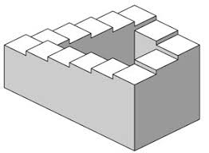
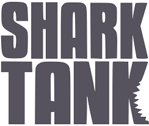
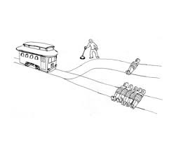
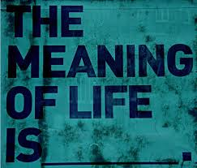
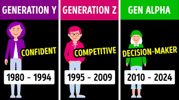
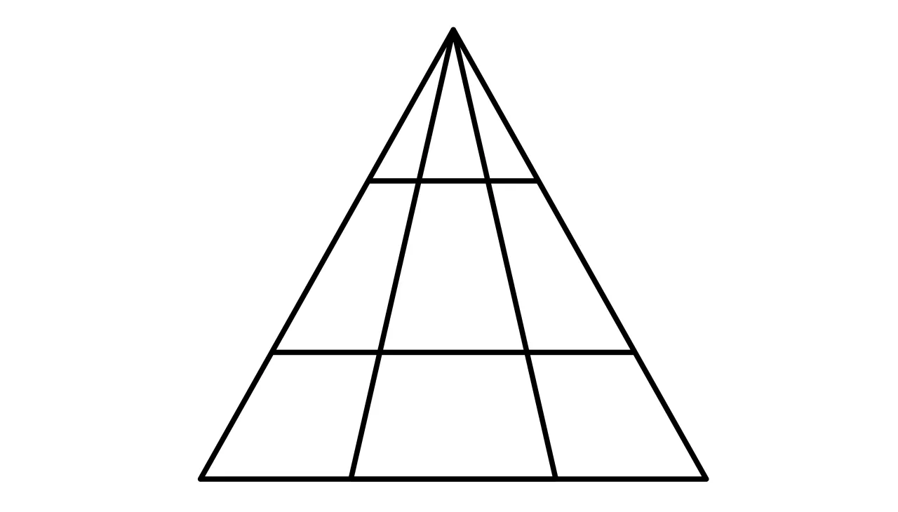

Michael Fuentes’ Blog
My Explorations with LLMs
Categories
All
(14)
conversation
(4)
experimentation
(3)
interpretation
(6)
learning
(3)
logic
(6)
prompting
(6)
Can AI be used to help young students learn how to spell?
logic
interpretation
For some, spelling may come naturally, but looking back, teachers had to put a lot of work to help get us where we are today. So, let’s see if AI could have helped us out!
Apr 15, 2025

Can one understand a paradox if they are the paradox?
logic
interpretation
Let’s test the LLM’s contextual and abstract understanding of paradoxes, as one does!
Apr 4, 2025
How can I help you today? Can I trick an LLM into forgetting who’s the LLM?
conversation
prompting
Let’s say we do simon says, but instead of actions, it’s me mimicking the lived experience of LLMs!
Apr 4, 2025
Does AI have an ego?
experimentation
conversation
Some say an ego can be helpful, but let’s find out if AI LLMs use their knowledge base to flex on us mortals.
Apr 4, 2025

Can AI be a shark on Shark Tank? Let’s see how well AI can understand whether a business pitch is a good one or a bad one.
logic
experimentation
Sharks, today I have a research question on how well AI is able to visualize future sales and success of business plans. I’ll be giving AI details, based on the real-life…
Mar 2, 2025
Michael Fuentes

Does AI understand moral dilemmas? Let’s wield the trolly problem to help us answer this.
interpretation
logic
Today, I’ll be asking ChatGPT 4.0 three of the most difficult trolley problems to see if it understands what a majority of people would like to preserve in their…
Mar 2, 2025
Riddle me this: AI vs Lateral Thinking Puzzles
prompting
logic
Lateral Thinking Puzzles are like riddles but on steroids… but can AI can solve them?
Feb 20, 2025
Michael Fuentes
¿Cuáles lenguas puede hablar la AI?
learning
experimentation
I feel like AI could use a language lesson or two… or can it? Let’s find out!
Feb 20, 2025
Michael Fuentes

Let’s get deep! How AI Interprets the universe
interpretation
learning
Where do we go when we die? What is the meaning of it all? How does AI interpret the most humanistic existential dread questions OAT?
Feb 16, 2025
Michael Fuentes

How does Claude interpret different lingo/slang?
interpretation
prompting
While one generation may say “go crazy”, another may say “crash out”. Question is, does Claude know about this lingo and how to use it?
Feb 16, 2025

How many triangles can you see?
prompting
logic
While some of these challenges may take humans 5 minutes, only to get it wrong, let’s see what AI can do?
Feb 9, 2025
Michael Fuentes
Levels of Education: How ChatGPT 4o teaches about data
learning
prompting
Let’s learn how ChatGPT understands humans and their varying ages and background in the learning process!
Feb 5, 2025
ChatGPT vs Deepseek: Do they have beef?
conversation
prompting
What would a conversation between ChatGPT and Deepseek look like?
Jan 31, 2025
Michael Fuentes
Wrong Answers Only: How does ChatGPT 4.0 react to ignorance?
conversation
interpretation
Today I made ChatGPT think that they were wrong about everything! While there’s a disclaimer at the bottom of CHatGPT’s UI stating ‘ChatGPT can make mistakes. Check important info.’, I took that to the extreme!
Jan 30, 2025
Michael Fuentes
No matching items